スゴロクイベント 2005/6/4
|
ナノサイトのイベントじゃありませんが、掲載許可を頂いたので掲載します。 夜にメルボンの街でスゴロクで遊ぶイベントがあったので参加してみました。 最近じゃこうやって遊ぶことが珍しいので、とても楽しかったですｗ DICEコマンドで乱数を出してその数のマスだけ進む（サイコロを振る） ゲームです。ライフジュエルのマスに止まったらもう1回サイコロを振れる、 キュアージュエルなら1回休み、エレメントジュエルなら指名した人を 1回休みにできるルールだそうです。ちなみにスキルはただの分岐点。 |
| 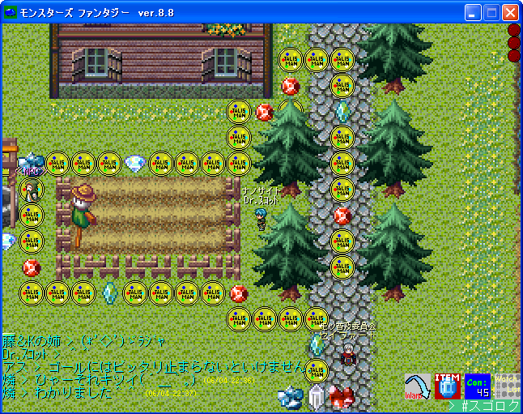 |
| スタート前です。ナノ1周年イベントで大活躍した（？）Dr.ｽｺｯﾄさんが今日も参戦します。 |
| 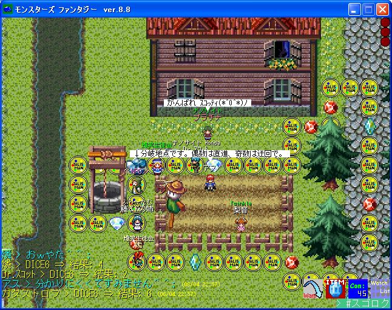 |
| 最悪のスタートを切ったDr.ｽｺｯﾄさん。序盤は4位を快走します。（4人中） |
| 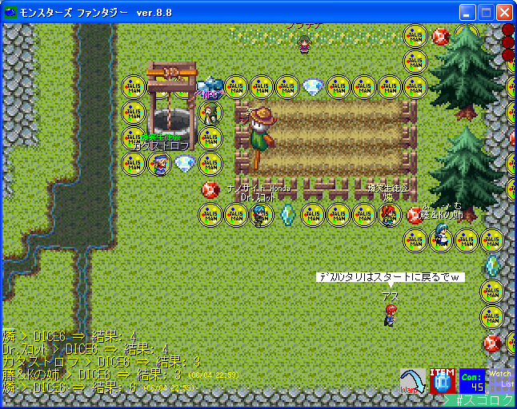 |
| 3位に浮上ｗ |
| 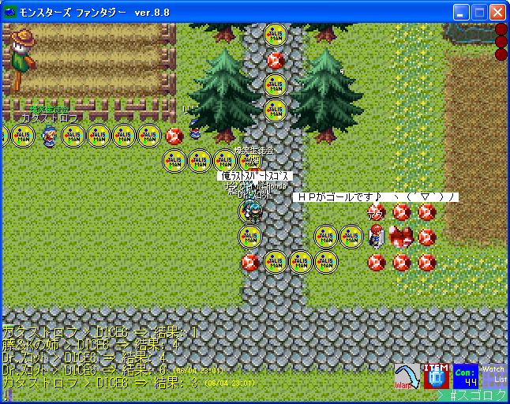 |
| 2位に浮上ｗ後半で4以上を連発して猛追撃です。 |
| 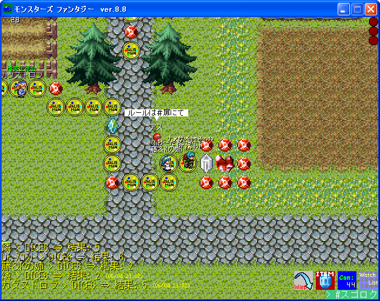 |
| ついにゴール直前のマスで1位と並びます！！…しかし順番的に負け確定ｗ |
| 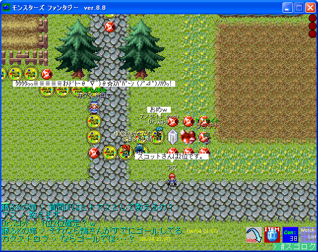 |
| Dr.ｽｺｯﾄさんは2位が確定しました。今回はまじめに健闘しましたｗ |
| 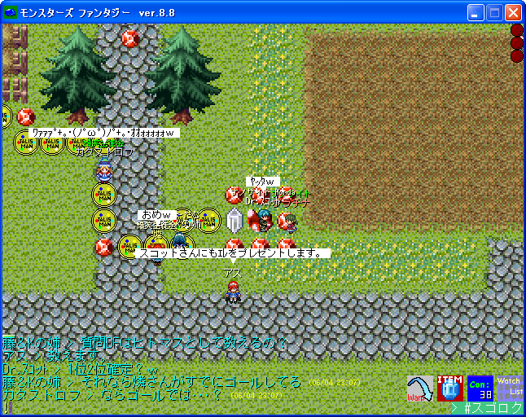 |
| アイテム貰えることになりました♪ |
| 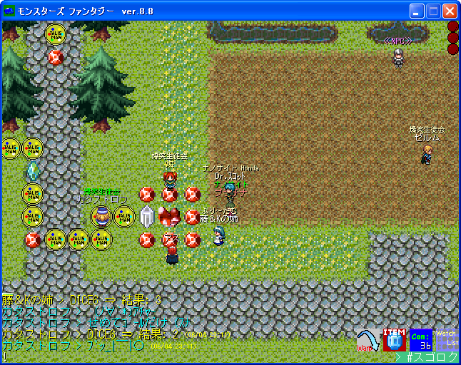 |
| 3人ゴールしてます。後は孤軍奮闘？ｗ |
| 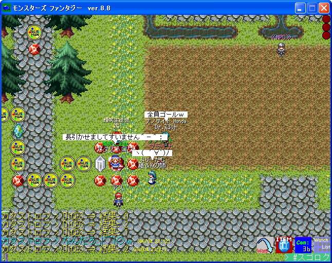 |
| めでたく全員ゴールしました。 |
| 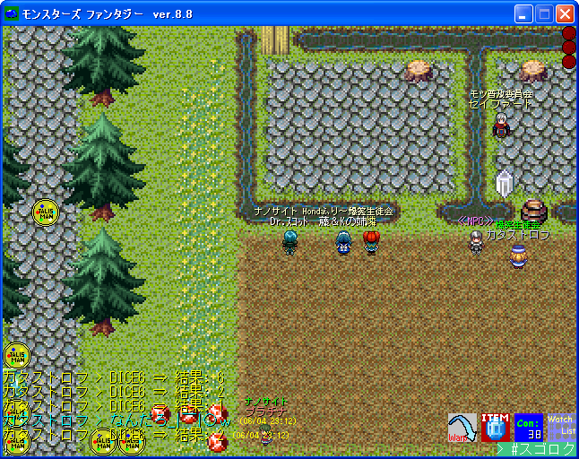 |
| アイテム授与式です。これのお礼にこうして掲載してますｗ |
| 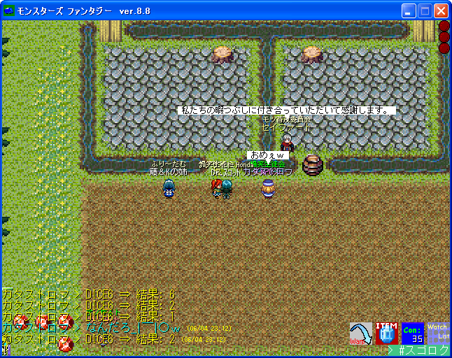 |
| 最後に開催者の挨拶で終わりました。 |
| 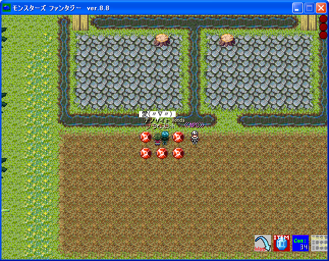 |
| 一気に静かに…ｗ |
| ｢NANOCITES｣ Web Master:ヨハンソン |